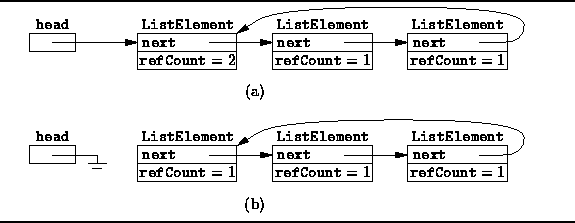

Data Structures and Algorithms
with Object-Oriented Design Patterns in Java
Data Structures and Algorithms
with Object-Oriented Design Patterns in Java
So far, reference counting looks like a good idea.
However, the reference counting does not always work.
Consider a circular, singly-linked list
such as the one shown in Figure  (a).
In the figure, the variable head refers to the head of the linked list
and the last element of the linked list also refers to the head.
Therefore, the reference count on the first list element is two;
whereas, the remaining list elements all have a reference count of one.
(a).
In the figure, the variable head refers to the head of the linked list
and the last element of the linked list also refers to the head.
Therefore, the reference count on the first list element is two;
whereas, the remaining list elements all have a reference count of one.

Figure: Why reference counting fails.
Consider what happens when we assign the value null to the
head variable.
This results in the situation shown in Figure (b).
The reference count on the first list element has been decreased by one
because the head variable no longer refers to it.
However, its reference count is not zero,
because the tail of the list still refers to the head.
We now have a problem. The reference counts on all the lists elements are non-zero. Therefore, they are not considered to be garbage by a reference counting garbage collector. On the other hand, no external references to the linked-list elements remain. Therefore, the list elements are indeed garbage.
This example illustrates the Achilles' heel of reference counting--circular data structures. In general, reference counting will fail to work whenever the data structure contains a cycle of references. Java does not prevent the creation of cyclic structures. Therefore, reference counting by itself is not a suitable garbage collection scheme for arbitrary objects. Nevertheless, it is an extremely useful technique for dealing with simple objects that don't refer to other objects, such as Integers and Strings.
 Copyright © 1998 by Bruno R. Preiss, P.Eng. All rights reserved.
Copyright © 1998 by Bruno R. Preiss, P.Eng. All rights reserved.